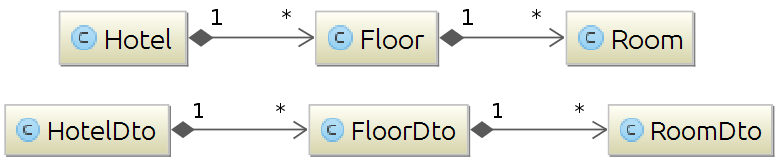

Created by Sébastien Lesaint @LesaintSeb
www.javatronic.fr
available on GitHub https://github.com/lesaint/damapping
DAMapping gives you back the control of bean mapping code
and helps you wire it the right way into your application
Bean Mapping code must be part of the application
We should respect basic principles
@Mapper
public class FootoBar {
public Bar convert(Foo input) {
[...]
}
}
generated interface
public interface FootoBarMapper {
Bar convert(Foo input);
}
generated implementing class
public class FootoBarMapperImpl implements FootoBarMapper {
public Bar convert(Foo input) {
return new FootoBar().convert(input);
}
}
code is not representative of actual generated code as an intermediate Factory is used
and you should!
its supported, so save on GC and use it!
@Mapper
public enum FootoBar {
INSTANCE;
public Bar convert(Foo input) {
[...]
}
}
generated implementing class
public class FootoBarMapperImpl implements FootoBarMapper {
public Bar convert(Foo input) {
return FootoBar.INSTANCE.convert(input);
}
}
again, an intermediate Factory is actually used
allows seamless use of mapper to transform collections
@Mapper
public enum FootoBar implements Function<Foo, Bar> {
INSTANCE;
@Override
@Nullable
public Bar apply(@Nullable Foo input) {
[...]
}
}
generated interface
public interface FootoBarMapper extends Function<Foo, Bar> {
}
it's coming!
any non private method in class annotated with @Mapper will be exposed in a generated interface
DAMapping will generate a class implementating this interface which will delegate the mapping code implementation to the dedicated class
Add a single dependency to your project
<dependency>
<groupId>fr.javatronic.damapping</groupId>
<artifactId>annotation-processor</artifactId>
<version>0.2.3</version>
</dependency>
no public version exists yet
as long as the dependency has the default or compile scope, DAMapping annotation processor is picked up by the compiler and invoked
basicaly, a @Mapper class with at least one method annotated with @MapperFactoryMethod
@Mapper
public class FooToBar {
private final boolean enableCrazyCode;
@MapperFactoryMethod
public FooToBar(boolean enableCrazyCode) {
this.enableCrazyCode = enableCrazyCode;
}
public Bar tranform(Foo foo) {
[...]
}
}
Can be annotated with @MapperFactoryMethod:
a Mapper interface
public interface FooToBarMapper {
Bar tranform(Foo foo);
}
a MapperFactory interface
public interface FooToBarMapperFactory {
FooToBarMapper instance(boolean enableCrazyCode);
}
this is the interface to reference in your code
a MapperFactory implementation
public class FooTorBaMapperFactoryImpl implements FooToBarFactory {
@Override public FooToBarMapper instance(boolean enableCrazyCode) {
return new FooToBarMapperImpl(new FooToBar(enableCrazyCode));
}
private static class FooToBarMapperImpl implements FooToBarMapper {
private final FooToBar instance;
public FooToBarMapperImpl(FooToBar instance) {
this.instance = instance;
}
@Override Bar tranform(Foo foo) { return instance.tranform(foo); }
}
}
Example: one-to-one mapping from Beans to DTOs
mapping Room to RoomDto is a basic mapper
public class RoomToRoomDto {
[...]
}
dedicated class should use Mapper interface as any other type
public class FloorToFloorDto {
private RoomToRoomDtoMapper roomMapper = new RoomToRoomDtoMapperImpl();
[...]
}
public class HotelToHotelDto {
private FloorToFloorDtoMapper floorMapper = new FloorToFloorDtoMapperImpl();
[...]
}
By default, DAMapping will do all the wiring by itself
But it can be integrated with DI frameworks because they do wiring at a larger scale
support is currently limited Spring DI @Component
add @Component next to @Mapper
@Mapper
@Component
public class FootoBar {
public Bar convert(Foo input) {
[...]
}
}
Interface implementation is a @Component
@Component
public class FootoBarMapperImpl implements FootoBarMapper {
@Resource
private FooToBar instance;
public Bar convert(Foo input) {
return instance.convert(input);
}
}
add the @Mapper class's package to package-scan
get injected
@Component
public class SomeClass {
@Resource
private FooToBarMapper fooToBarMapper;
}